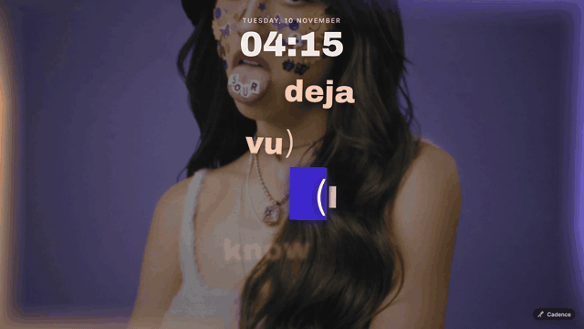

Lyrics on your lock screen that light one word at a time, over a wallpaper that hits on the beat.
Menu bar app · Spotify, Apple Music and YouTube · macOS 14 or later · Apple silicon and Intel

17 word animations, 17 kinetic styles, 88 presets and over 40 generated visuals. All of it timed to the voice and the beat.
Every word lights up the moment it's sung, with real word timing where it exists and learned timing where it doesn't.
Album-art wallpapers and generated scenes zoom, flash and throw particles on the real bass, heard through Core Audio.
A glowing rim around the screen in album colours. Race it, hold it still, or run it on the desktop too.
Switch looks in one click, shuffle a new one per song, heart favourites, or pin a look to an artist.
Works in Chrome, Safari, Arc, Brave, Edge and Vivaldi. Lyrics from four sources race, and the best one wins.
Edit lyrics, nudge timing, tap to sync, import a .lrc. Your fix sticks, and iCloud can carry it to your other Macs.
Grab Cadence.zip from the latest release.
Unzip and drag Cadence.app to Applications.
Not notarized, so allow it once in System Settings › Privacy & Security.
Allow the permissions, play a song, lock your Mac with ⌃⌘Q.
$ brew install bplyashwanth1-stack/tap/cadence # builds on your Mac, no warning
It isn't notarized by Apple. Open System Settings › Privacy & Security, scroll down and click Open Anyway. You only do it once, and installing with Homebrew avoids it entirely.
Turn Cadence on under System Settings › Menu Bar › Allow in the Menu Bar, or make room if the menu bar is full and the icon is hiding behind the notch.
Cadence auto-fixes timing and compensates for Bluetooth delay. For a stubborn song, nudge it from the menu bar or use Tap to Sync. Your fix is remembered.
Yes, in Chrome, Safari, Arc, Brave, Edge and Vivaldi. The browser needs to allow JavaScript from Apple Events once, and Cadence walks you through it.
Only a song's title, artist, album and length, to look up lyrics. Audio is analysed on your Mac and never leaves it. No account, no analytics, no tracking.